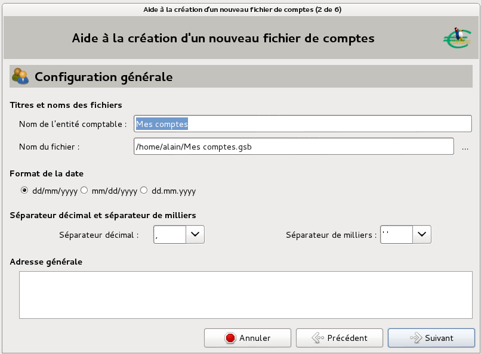
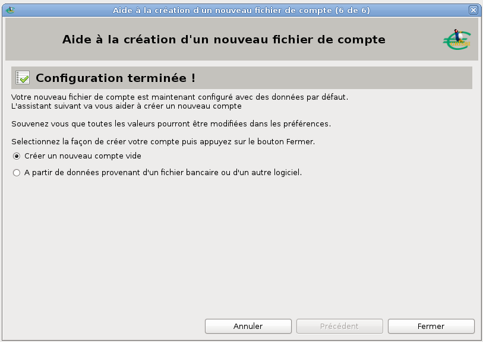

Au premier démarrage de Grisbi, l’assistant premier démarrage s’affiche pour vous aider à configurer l’application. Il comprend deux étapes, qui concernent la gestion du fichier de comptes (chargement et enregistrement automatiques, chiffrement et copies de sauvegarde).
Il est conseillé de cocher les options :
Cet assistant est suivi automatiquement par un deuxième, l’assistant de création du fichier de comptes. Puis vient automatiquement un troisième assistant, l’assistant de création de compte, qui permet de créer le premier compte. Tout cela est décrit en détail dans la section 3.3 ci-dessous.
À tout moment vous pouvez sortir de n’importe quel assistant par le bouton Annuler.
Si vous ne voulez pas utiliser l’assistant premier démarrage, vous pouvez à la place utiliser un fichier exemple (voir la section ci-dessous).
Si vous voulez utiliser Grisbi immédiatement sans être obligé de rentrer tout un tas d’opérations, par exemple pour vous faire une idée des possibilités de ce logiciel, vous pouvez télécharger le fichier Example_1.0.gsb, soit sur le site de Grisbi dans la rubrique Téléchargement, soit sur le site Sourceforge.
Note : dans ce fichier exemple, les noms des tiers sont de pure invention ; seul un hasard indépendant de notre volonté peut avoir fait que ce soit celui d’une personne ou d’une entité existante.
La première fois que vous utiliserez Grisbi, vous devrez d’abord créer un fichier de comptes. L’extension de ce fichier sera .gsb et son nom nom-de-votre-fichier.gsb.
Immédiatement après, il vous faudra créer au minimum un compte, et par la suite quelques autres comptes (comptes courants, d’épargne, de crédit, éventuellement un compte d’espèces et quelques comptes de transition) qui contiendront leurs opérations respectives.
Pour une gestion familiale, vous n’aurez normalement qu’un seul fichier de comptes, car cela permet tous les échanges entre vos différents comptes. Si vous gérez une association, ou une autre famille sans rapport comptable avec la première, vous créerez un autre fichier de comptes, qui portera un autre nom nom-de-votre-deuxième-fichier.gsb. Ainsi les entités comptables resteront bien séparées.
Attention : pour une entité comptable donnée, il est nécessaire et important de bien distinguer LE «fichier de comptes » et LES «fichiers de compte » :
Autrement dit, l’ensemble des comptes de votre foyer est enregistré dans un fichier de comptes, et l’ensemble des comptes de votre association l’est dans un autre fichier de comptes ; et un compte dans Grisbi peut correspondre à un fichier de compte, mais seulement lorsqu’on parle d’importation ou d’exportation de données.
Le déroulement général de la procédure de création d’un fichier de comptes est le suivant : cliquez sur le menu Fichier - Nouveau fichier de comptes ; l’assistant de création de fichier de comptes s’ouvre, qui comprend six étapes. À la sixième étape, l’assistant vous propose :
Après la création de ce premier compte ou l’importation d’opérations de comptes existants, si vous voulez créer d’autres comptes, vous retournerez à la fin de la procédure de création du fichier de comptes, ce qui vous renverra dans les deux cas vers la création d’un nouveau compte.
Pour créer votre fichier de comptes, cliquez sur le menu Fichier - Nouveau fichier de comptes ; la procédure détaillée est la suivante :

Figure 3.1: Configuration générale du fichier de comptes

Figure 3.2: Choix du premier compte
D’une manière ou d’une autre, vous venez donc de créer votre fichier de comptes, ainsi que le premier compte de ce fichier.
Si vous voulez créer maintenant d’autres comptes, sélectionnez le menu Édition - Nouveau compte pour créer un autre compte (voir la section 7.4, Création d’un nouveau compte).
Sinon, vous pouvez commencer à utiliser le compte que vous venez de créer ou celui dont vous venez d’importer les données.
Attention : d’une manière générale, il est déconseillé d’avoir des accents ou des espaces dans les noms des répertoires et fichiers utilisés par Grisbi. Si c’est le cas, renommez-les maintenant. Par exemple, les espaces peuvent être remplacées par des tirets bas (_).
Vos opérations ne sont pas écrites au fur et à mesure de leur saisie comme elles peuvent l’être dans d’autres logiciels ; vous devez donc enregistrer votre fichier de comptes avant de quitter. N’ayez crainte, Grisbi vous prévient si vous ne l’avez pas fait.
Vous pouvez configurer les options d’enregistrement du fichier de comptes dans le menu Édition - Préférences, voir le paragraphe 22.1.1, Gestion des fichiers de comptes.
Voir la section 5.1.2 pour importer des fichiers de compte d’un autre logiciel dans Grisbi. Pour le moment, Grisbi supporte les formats Gnucash, OFX, CSV et QIF.